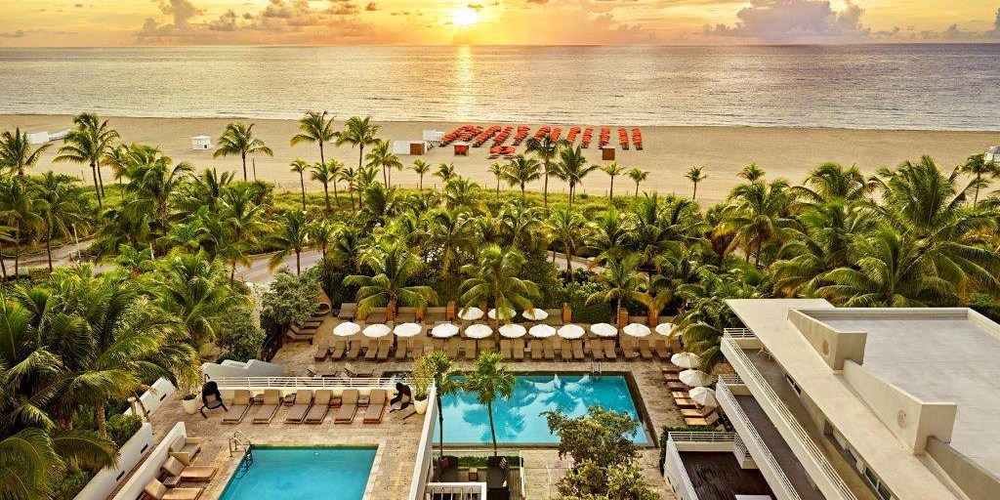

Palm Beach
It doesn’t get much better than this five-star, historic, and premium luxury beach resort in Palm Beach, Florida. Guests have been making their vacation dreams come true here since the property opened in 1896. Italianate aficionados might recognize the design, modeled after a Roman Medici palace.
But if you’re here for the beach, you’ll be pleased to know that The Breakers offers guests a half-mile slice of private sand for you to frolick on to your heart’s content. Otherwise, stay wet at the expansive main pool, an infinity-style adults-only pool, a zero-entry active pool (for families), another infinity-style pool near some of the private bungalows, and/or at one of the five whirlpool spas

Miami Beach Resort, South Beach, Florida
On site, guests will find direct beach access as well as two swimming pools that are accompanied by a plunge pool and cabanas. There’s also a spa featuring salt-inspired treatment options. Byblos restaurant offers Mediterranean mezze and large plates in a colorful Moroccan-styled setting, and Florida Cookery offers locally inspired breakfast.
The Compass Rose Bar offers coffee, juice, light bites and cocktails in a tropical setting, while the Grove features cocktails and alfresco dining for lunch and dinner; 24-hour in-room dining is also available for guests. With a prime location on Collins and 15th, the resort puts guests at the center of nightlife, shopping and dining options. The resort is within a five-minute walk of Ocean Drive and Lummus Park Beach, as well as within a 15-minute walk of Lincoln Road Mall.
©2019 Vacation Spots
Top